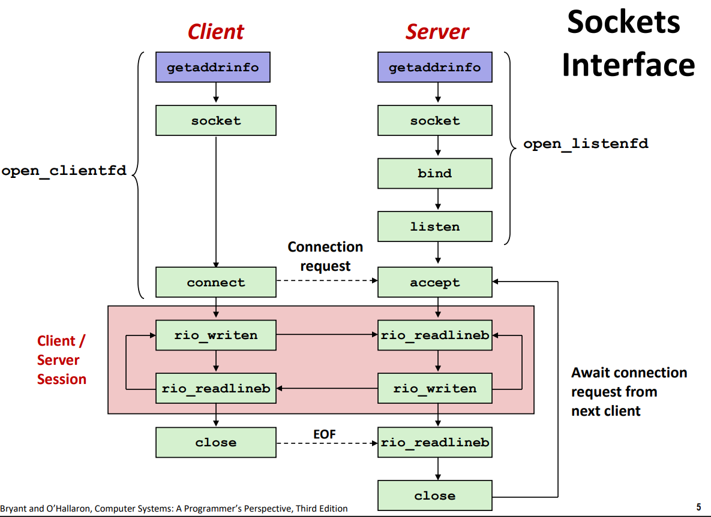

CSAPP-Lab-7 实验报告: proxylab
摘要
本文介绍了笔者在做 proxylab 一节的实验报告。该 lab 旨在使用 C 语言实现简易的网络代理，通过实践 socket 编程来更好地从程序员的角度理解网络交互。
这一部分的实验其实难度不大，本篇更多的是梳理一些理论知识。
理论知识
socket 通信
网络套接字（英语：Network socket；又译网络套接字、网络接口、网络插槽）在计算机科学中是电脑网络中进程间收发数据的端点。socket 中往往包含协议族（IPV4、IPV6 等）、socket 类型（有无连接等）、传输层协议（TCP 或 UDP）等信息，与远端主机建立连接并进行通信。在 linux 上，一切 IO 都被抽象成了文件操作，网络 IO 也不例外，也是通过一系列函数调用得到代表网络连接的文件描述符（fd），接着就可以进行读写操作。从客户端和服务端的角度，一次 socket 通信的流程如下图所示：

客户端侧：
getaddrinfo获取服务端信息socket创建 socket 对象，完全本地操作，不涉及网络通信connect与远端服务端建立连接，获取文件描述符- 通过
read/write读写网络读写，read阻塞，write不阻塞 close关闭文件描述符
服务端侧：
getaddrinfo获取服务端信息socket创建 socket 对象，完全本地操作，不涉及网络通信bind将 socket 与本地端口绑定listen进入被动监听状态accept阻塞等待新的连接到来- 通过
read/write读写网络读写，read阻塞，write不阻塞 close关闭文件描述符
按照这个流程，可以写出如下的服务端程序：
1 | int main(int argc, char **argv) |
这样的代码是有效的，但是缺点在于，每次只能处理一个客户端连接，其余的连接只能排队等到这个用户关闭连接后才能被受理。假设没有自动关闭连接的机制，连接中的用户离开电脑几个小时，服务端对外表现完全不可用，这是显然无法接受的。因此，服务端需要并行处理多个连接的能力。
进程并发
fork 创建子进程，用于处理客户端的读写，主进程只负责进行连接的建立，代码如下所示。
1 | int main(int argc, char **argv) |
这种方式有以下优点：
- 安全：各个子进程有独立的地址空间，不会意外修改掉其他进程的内存。
缺点在于：
- 不便利：难以在父子进程或其他进程间共享状态，需要通过进程通信（IPC）的方式。
- 开销大：进程的创建、销毁、切换都需要很大的开销。
IO 多路复用
也称为事件驱动的并发模型。利用 select/epoll 的系统调用，实现在一个进程内监听多个 IO 事件，并进行处理，核心代码如下。
1 |
|
可以看出来，核心的逻辑在于维护要监听的 fd 列表，在一个循环中，使用 Select 反复监听 IO 事件到来，并进行处理：
- 来自
listenfd的新连接：通过Accept获取新的连接connfd，添加到客户端列表中，并开始监听 - 来自已经建立连接的
connfd的读写：读取并处理，如果收到 EOF，关闭连接移除监听
这种方式有以下优点：
- 灵活：程序员可以更好地控制程序的行为，比如为某些客户端优先提供服务。
- 单线程：只有一个线程，可以方便地在不同函数内共享全局变量，没有并发问题，也更利于调试。
也有着以下缺点：
- 编程复杂度：事件驱动的编程模型的复杂度是基于进程的方法的数倍，而且并发粒度越细，模型越复杂。对比之下，基于进程的方法容易设计出干净的代码结构。
- 无法利用多核优势：只使用了单线程。
线程并发
与进程的思想类似，使用线程来实现。
1 |
|
还可以使用线程池的方法，通过复用线程进一步减少线程创建和销毁的开销，代码如下。这是一个典型的生产者 - 消费者模型，主线程作为生产者，通过 Accept 获取新连接，工作线程为消费者，处理新连接的读写逻辑。
1 | // 线程安全的阻塞队列 |
线程的方法有如下优点：
- 方便共享状态：线程间共享地址空间
- 开销小：创建、销毁、切换的开销更小，且可以通过线程池进一步减少开销
缺点在于：
- 并发问题：无意识的共享可能会使得线程状态被污染，进而出错。还可能出现竞态条件、死锁等问题。
Part 1
实现基础的 http 代理功能，需要做的事情很清晰：
- 接受客户端连接，解析 http 请求行（端口与 uri）与请求头
- 与目标服务器建立连接，初始化 http 请求行，设置代理请求头，转发额外请求头
- 将目标服务器的响应转发给客户端
Part 2
实现代理服务器的并发。这里可以使用上面提到的线程池的方法，通过生产者 - 消费者的模式交互。先实现一个阻塞队列，sbuf.h 代码如下，队列中包含三个信号量，用于同步。mutex 控制了循环队列 buf 的互斥读写，slots,items 记录了队列中的空槽和物品的数量，控制生产者与消费者的等待逻辑。
1 |
|
sbuf.c 代码如下。初始化时，队列为空，slots 为 n，物品数量为 0。在插入新元素时，需要先阻塞等到有空槽 P(slots)，再获取队列的互斥锁 P(mutex) 进行插入。在读取新元素时，需要先阻塞等到有元素 P(items)，再获取队列的互斥锁 P(mutex) 进行读取并删除。
1 |
|
在 Java 中的阻塞队列，也是类似的实现逻辑。区别在于，只使用了一个可重入锁，搭配两个条件变量 notempty,
notfull 标识队列是否非满与非空。
Part 3
实现缓存功能，缓存客户端请求的资源，减少与服务端交互。在服务端并行的设置下，cache 的读写显然必须有锁保护。然而，一把大锁会使得所有请求变为串行执行，是不可行的，可以从两个角度改进：
- 分段锁。划分多个
cache，根据 hash 路由，每次读写只在段内加锁，jdk 1.7 之前的ConcurrentHashMap就是这种思想。 - 优先读。考虑到
cache的读多于写，而读取时可以不需要加锁，写入时才需要加锁。因此，可以优先保证读取，来提高性能。可以通过读者写者问题的解决方法实现。
读者写者问题（Readers-Writes Problem）是互斥问题的通用描述，，具体为：
- 读者线程只读取对象
- 写者线程修改对象
- 写者对于对象的访问是互斥的
- 多个读者可以同时读取对象
常见的应用场景是：
- 在线订票系统：所有顾客都在查看座位，正在订票的顾客必须对数据库有互斥访问权限。
- 多线程缓存 web 代理：多个线程可以读取缓存，但要写入的线程必须有互斥访问权限。
根据不同的读写策略，可以分为两类读者写者问题，需要注意的是，这两种情况都可能出现 starvation（饥饿）。
第一类读者写者问题（读者优先）
- 如果写者没有获取到使用对象的权限，不应该让读者等待
- 在等待的写者之后到来的读者应该在写者之前处理
- 也就是说，只有没有读者的情况下，写者才能工作
第二类读者写者问题（写者优先）
- 一旦写者可以处理的时候，就不应该进行等待
- 在等待的写者之后到来的读者应该在写者之后处理
读者优先的代码如下。第一个读者到来时，获取写锁 P(w) 来阻塞后续写入，最后一个读取完毕的读者释放写锁 V(w) 允许后续写入。
1 | /* Global variables */ |
代码与结果
cache 部分我复用了之前 cachelab 的代码，修改成了分段锁的版本。
1 |
|
结果如下：
1 | *** Basic *** |
总结
完结撒花！终于在 2023 年完成了 CSAPP 这门课的学习！在这门课的学习与实践里，收获还是非常多的。一方面复习了本科学习的专业知识，还从教授的旁征博引中领悟了新的理解；另一方面，在这么多课程学完之后，对计算机系统的认识也有了更清晰的轮廓，有一种计算机大厦落地简称的感觉。细分方向的专业课是计算机系统里小而独立的模块，像计算机组成、操作系统、编译原理等，CSAPP 可以把相关的知识串起来，以程序员的角度，建立起对计算机系统的顶层认识。这也是我觉得这门课的魅力所在。
祝看到这篇博客的朋友们，新年快乐，万事顺意！